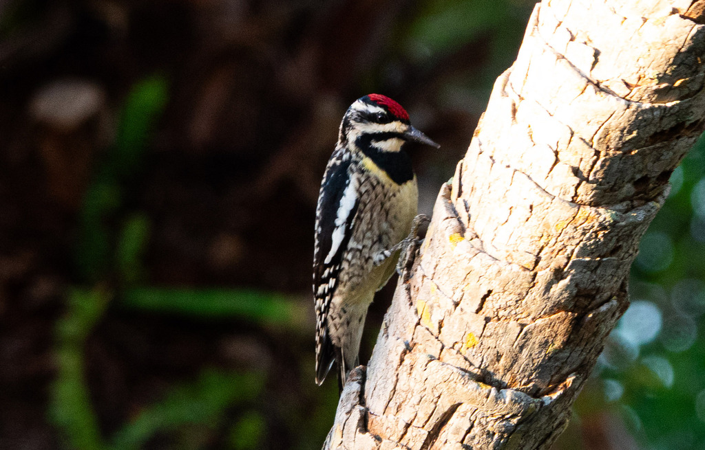

- Unlike our year-round residents like the Red-bellied Woodpecker, the Yellow-bellied Sapsucker is the only eastern woodpecker that is a true long-distance migrant — breeding in northern forests and traveling south to spend the winter with us here in Florida.
- A genuine sap farmer: it drills organized, horizontal rows of small holes (sapwells) in tree bark, maintains them daily to keep the sugary sap flowing, then laps up the liquid — along with any trapped insects — with a specialized, brush-like tongue.
- The sapsucker's drilled sapwells double as a neighborhood buffet. Hummingbirds, butterflies, bats, and other birds regularly stop in for a free sip. Ruby-throated Hummingbirds actually time their spring migration to follow sapsuckers northward, relying on these wells for fuel before spring flowers bloom.
- Despite the name, the yellow belly is often surprisingly faint — sometimes closer to off-white or soft cream against the trunk. The single best field mark is the bold, vertical white stripe running down the side of the folded wing.
A robin-sized woodpecker, boldly patterned in black and white. Both sexes have a bright red forehead cap and a long vertical white stripe running down the folded wing — the single best field mark. Males add a vivid red throat patch; females show white there instead. The underparts are whitish with a soft, understated yellow wash on the belly (often so faint it reads as off-white or pale cream — don't expect a bright yellow). The back is mottled black and white, and a black crescent marks the chest.
Flies in the typical woodpecker undulating, bounding pattern. The broad white wing stripe flashes prominently and is often the first thing seen as the bird moves between trees.
Brownish overall with a finely spotted crown and the same bold white wing stripe present in adults.
Even if you miss the bird, look for the evidence: neat horizontal rows of small, weeping holes in tree bark are the sapsucker's calling card.
Quiet for most of its Florida winter stay. Listen for soft mewing or whining notes — a cat-like "mew" — when disturbed. Also produces an irregular, stuttered drumming pattern (sometimes likened to Morse code) that becomes more frequent as spring departure approaches. Will drum on metal surfaces like signs and chimney flashing, amplifying the sound considerably.
Red forehead cap (both sexes); bold vertical white wing stripe; red throat in males, white in females; soft yellow belly wash (often very faint — closer to off-white or pale cream); black chest crescent; mottled black-and-white back. Robin-sized. Often sits motionless against a trunk for long stretches — look carefully at bark, not just moving shapes.
Tree sap is the dietary cornerstone — specifically the sugary tree sap drawn from self-drilled sapwells. Also eats insects (especially ants) and spiders gleaned from bark, as well as berries and fruit, particularly October through February. Insects caught in the sticky sap around wells are scooped up alongside the sap itself.
Scan tree trunks slowly — this bird blends into bark and often sits motionless. Focus on medium to large hardwoods: live oaks, wax myrtles, dahoon hollies, and pines are locally favored. The surest approach is to find the sapwells first — look for orderly horizontal rows of small weeping holes in bark — then wait nearby for the owner to return.
Present at Palma Sola from October through April, with peak activity in the heart of winter (December–February). Diurnal; most active during morning hours while tending sapwells. Nearly silent in December and January; listen for mewing calls and irregular drumming in February and March as individuals prepare to migrate north, with stragglers possible into April.
Observe and enjoy.
- © Rob Carr (CC-BY-NC), via iNaturalist